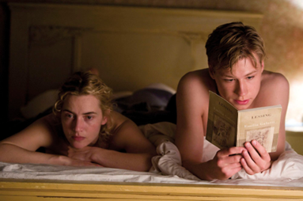

당신이 사랑하는 사람이 법정에 서 있다. 그 사람은 고의로 자신이 하지 않은 죗값까지 치르려고 한다. 당신이 진실을 말하면, 그 사람이 구속되는 것으로부터 구할 수 있다고 가정해 보자. 그렇다면 당신은 진실을 말하고 사랑하는 사람을 구할 것인가, 그러지 않을 것인가?
이는 영화 <더 리더: 책 읽어주는 남자> 전체를 관통하는 질문이다. 나치 독일이 패망한 후인 1958년 서독의 노이슈타트(Neustadt)를 배경으로 영화는 시작된다. 고등학생 소년 ‘마이클’은 길을 걷다 열병으로 쓰러지고, 지나가던 행인이었던 ‘한나’는 아픈 그를 보살피고 부축해 집 앞까지 데려다준다. 며칠 후 다 나은 몸으로 감사 인사를 전하러 그녀의 집을 찾아간 마이클은 묘한 끌림을 느끼고 결국 그녀와 사랑에 빠지게 된다. 15살의 평범한 학생인 마이클, 그리고 전차 검표원으로 일하고 있는 36세의 한나는 남들과는 색다른 방식의 데이트를 즐기곤 했다. 바로 소설, 시, 만화책 장르 불문하고 책을 읽어주는 것. 친구들과 놀러 다니기 바쁜 여느 또래 친구들과 달리, 방과 후 한나의 집으로 달려와 사랑을 나누고 책을 읽어주는 것이 일상이 된 마이클. 마이클이 책을 읽어주면 한나는 늘 귀를 기울이고 집중했다. 그렇게 그들은 행복한 나날을 보냈다.
자전거 여행을 떠난 둘. 늘 집 데이트만 하다 밖에 나와 자연을 만끽한다. 레스토랑에 들러 주문을 하는데 메뉴판은 보는 둥 마는 둥 하더니, 마이클에게 네 메뉴와 똑같은 메뉴를 시키겠다고 하는 한나. 그러면서 메뉴판을 읽고 있는 어린아이들을 부러움과 질투가 담긴 시선으로 쳐다보곤 한다. 또, 마이클이 지도를 보여주려고 해도 “난 몰라도 돼.”라며 관심 없는 모습을 보인다. 여행을 다녀온 후, 한나는 상사에게 검표원에서 사무직으로 승진하게 되었다는 기쁜 소식을 듣지만, 왜인지 표정이 어둡기만 하다. 그렇다. 그녀는 문맹이었다. 문맹인 그녀에게 서류를 수도 없이 봐야 하는 사무직으로의 승진 소식은 오히려 불운이었던 것이다. 이유도 알려주지 않은 채 마이클과의 관계를 정리하고 직장도 옮긴 후 자취를 감춰버린 한나. 그렇게 하루아침에 마이클의 첫사랑은 떠나갔다.
8년의 시간이 흘렀다. 어엿한 법대생이 된 마이클은 세상을 떠들썩하게 만든 나치 친위대[1] 재판을 관람하러 갔다가 피고석에 앉아있는 한나를 발견하고 충격에 빠진다. 수감자들을 선별해 아우슈비츠[2]로 보내는 일을 하였다는 그녀. “수많은 유대인들이 죽을 것을 몰랐나요?”라는 재판장의 질문에 “알고 있었습니다. 그러나 그것이 내 직무였기 때문입니다. 재판장님이라면 어떻게 하셨을 건가요?”라며 오히려 당당하게 반문하는 한나의 모습을 보며 마이클은 배신감과 역겨움을 느낀다.
과거 부모 세대들이 치른 나치 전범 행위에 대하여, 비록 자신들이 하지 않은 일이라도 죄책감을 느끼고, 책임을 다하도록 교육받아온 전후 세대인 마이클. 자신이 한때 가장 사랑했던 사람이 그 일에 동조했다는 사실, 그리고 그에 전혀 죄책감을 느끼지 않는다는 사실에 마이클은 충격을 금치 못한다. 최대한 자신의 형벌을 줄이려는 다른 전범들과 달리, 있는 그대로 인정해버리는 순진한 한나. 다른 전범들은 ‘이 모든 게 한나가 보고서로 지시한 일이었다’며 한나를 이용해 자신들의 죄를 덮어씌우려고 한다. 재판장은 실제 한나가 지시한 일인지 필체 확인이 필요하다며 한나에게 글을 써보도록 시킨다. 자신이 문맹이라는 사실을 인정하기가 죽기보다 싫었던 한나는 결국 자신이 보고서를 썼다며 거짓말을 해버린다.
그녀가 문맹이라는 사실은 마이클 만이 알고 있었다. 마이클은 그 사실을 알리고 그녀를 구할지 말지 수도 없이 고민하는 모습을 보이지만 결국 무기징역을 선고받는 그녀를 뒤로 한 채 법정을 떠난다. 마이클은 왜 진실을 말하지 않았을까.
법은 ‘자연법’과 ‘실정법’ 두 가지로 분류된다. 자연법은 시공간의 개념을 초월한 법으로 모든 시대와 장소에 적용될 수 있는 영구불변의 법을 지칭한다. 반면 실정법이란 이러한 자연법에 대립되는 개념으로, 국가에 의하여 제정되어 과거에 시행되었거나 현재에 시행되고 있는 법을 말한다. 영화 속에서 “사회는 법에 의해서 운영된다. 문제는 ‘잘못했냐’가 아니라 ‘법을 어겼냐’는 것이다.”라는 대사가 나온다. 현재의 법에 비추어서가 아니라 그 당시 법, 그러니까 나치 집권 당시의 ‘나치 법’에 의하면 나치 친위대의 만행은 정당했으며 불법이 아니라는 말이다. 그러니 한나가 맡았던 직무도 나치 법에 의하면 도덕적으로 비판받을 수는 있어도 위법은 아닌 게 된다.
하지만 그렇다고 해서 죄 없는 사람들을 집단적으로 학살하는 데에 동조한 것이 옳은 일이 되는 것은 아니다. 나치가 가한 만행은 실정법을 넘어서는 악행이고, 이에 한나는 자연법을 어긴 것이기에 처벌받아야 마땅하다고 생각한다. 그 당시엔 맞았을지라도 지금은 틀린 것이기에. 아마 법대생인 마이클은 자연법을 위반한 한나에게 자비를 베풀기보단 그녀가 대가를 치렀으면 하는 마음이 아니었을까 싶다.
“무식한 건 죄가 아니지만, 무식하기 때문에 죄를 일으킨다.” 한나가 재판장에서 자신의 억울함을 토로하는 모습을 보면서 나는 이 문장이 머릿속에 떠올랐다. 이 영화는 그녀의 ‘무지’를 주제로 다루는데, 보는 사람으로 하여금 질문을 던진다. “과연 무지하다고 해서 용서받을 수 있는가?” 하고 말이다.
한나가 나치 친위대로서 저지른 만행들은 독일 철학자 한나 아렌트의 ‘악의 평범성’ 개념을 떠올리게 했다. 이는 『예루살렘의 아이히만』에 나오는 구절로, 나치에 의한 유대인 대학살은 상명하복, 즉 상부의 명령에 순응하는 지극히 평범한 사람들에 의해 행해졌음을 이야기한다. 평범한 사람이 악인이 되는 것은 굉장히 쉽다. 악이란 뿔 달린 악마처럼 괴이한 존재가 아니며 선한 사람들이 평범하고 당연하게 여기는 행동들 중 무언가는 악이 될 수도 있다는 것이다. 한나는 배우지 못했고, 무지했으며, 자신이 하는 일이 잘못되었다는 것조차 인식하지 못하는 인물로 그려진다. 스스로 악한 의도를 품지 않았음에도 사유를 하지 않았기 때문에 악행을 저지를 수밖에 없었다.
“마이클이 그녀의 형을 경감시킬 키를 쥐고 있어도 밝히지 않은 이유가, 사랑하는 사람의 의견을 존중해서라기보다는, 한나가 연민의 대상은 될 수 있어도 면책의 대상이 될 수 없기 때문이다”라는 의견에 동의하는 사람으로서 한나가 아무리 무지로 인한 잘못을 저질렀더라도 처벌받아야 마땅하다고 생각한다. 문맹이 그녀의 면죄부는 될 수 없다.
이 영화는 나치 전범 세대와 전후 세대를 여느 독일 영화와 달리 ‘연인 관계’로 풀어냈다는 점에서 색달랐다. 부모 자식과는 다르게 ‘연인’이라는 관계성만이 주는 무언가가 있다고 생각한다. 이 관계성에는 이성적인 호감 그리고 욕망이 담겨있기에, 그 사람을 너무나도 사랑하면서도 동시에 역겨움을 느끼는 그런 입체적인 감정들이 더욱더 잘 느껴졌던 것 같다. 물론 나이 차이가 극명하게 난다는 점, 그리고 한나가 마이클을 부를 때 계속해서 ‘꼬마’라는 호칭을 사용한다는 점을 비추어보았을 때 부모-자식 간의 관계성도 완전히 배제한 것 같지는 않다.
극 중 한나가 수감생활을 한 지 시간이 많이 지나고 난 후, 마이클은 예전에 자신이 책을 읽어줬던 것처럼 카세트에 자신의 책 읽어주는 목소리를 녹음해 교도소로 보낸다. 한나는 이 카세트를 듣고 또 들으며, 책의 글자를 맞춰보고 글을 배우게 된다. 이 장면을 보면서 이들은 과거와는 또 다른 방식의 사랑을 하고 있다고 느껴졌다. 한나가 글을 깨우쳐 자신의 과오를 알게 하게끔 하고 싶은 것이었는지, 한나가 잘 살아가고 있는지 알기 위한 연락 수단이었는지 마이클의 본심은 알 수 없다. 그럼에도 수고로운 일을 견뎌내면서도 간접적으로나마 한나에게 닿고 싶어 하는 마이클을 보며 세상엔 다양한 형태의 사랑이 존재함을 다시금 느꼈다.
이 글을 쓰면서 이 영화와 관련된 여러 글과 영상들을 접했는데, 각자가 가지고 있는 가치관, 신념에 따라 다양하게 해석이 가능한 영화라고 느껴졌다. 그래서 꼭 직접 한 번 감상하시고 원문인 책도 읽어보시길 추천드린다. 그리고 내가 마이클이라면, 내가 한나라면 어떻게 행동했을지 한 번쯤 생각해 봐도 좋겠다.
